Đăng nhập bằng tài khoản Google để bước vào ngôi làng 3D của em.
Đang kiểm tra dịch vụ đăng nhập…
Hãy dùng tài khoản của em và đăng xuất khi chơi xong trên máy dùng chung.
BỐI CẢNH 3D · THREE.JS
Làng Việt · Dựng bối cảnh
Cấp độ01 / 12
Tinh thể0 / 3
Điểm0
Chương I
Tìm 3 tinh thể trong làng.
Kéo chuột/ngón tay: xoay góc nhìn · Cuộn: zoom Nhà dân 3D / Cổng 3D: xem bốn phía · Toàn cảnh: xem map
DỰNG BỐI CẢNH · THREE.JS 3D
Ngôi làng Việt. Nhà dân truyền thống.
Bấm Vào nhà trước cửa để khám phá nội thất. Xem bản đồ và kiến trúc 3D: nhà dân, cổng làng, cây đa, đình làng và hồ sen. Bản hiện tại tập trung xây dựng bối cảnh theo ảnh tham chiếu.
Kéo để xoay · Cuộn để phóng to/thu nhỏ. Bấm Nhà dân 3D để đối chiếu mặt trước, sau và hai bên.
BẢN ĐỒ HÀNH TRÌNH
Chọn cấp độ
Hoàn thành từng cấp để mở khóa cấp tiếp theo. Có thể chơi lại các cấp đã mở.
KHO BÁU ĐÃ MỞ
Em đã chinh phục ngôi làng!
BẢN ĐỒ THAM CHIẾU
Một ngôi làng · Nhiều góc nhìn
Bố cục theo ảnh chính diện: cổng phía trước, cây đa giữa sân, đình phía sau, vườn rau bên trái, hồ sen bên phải. Các công trình được dựng bằng hình học Three.js theo ảnh tham chiếu.
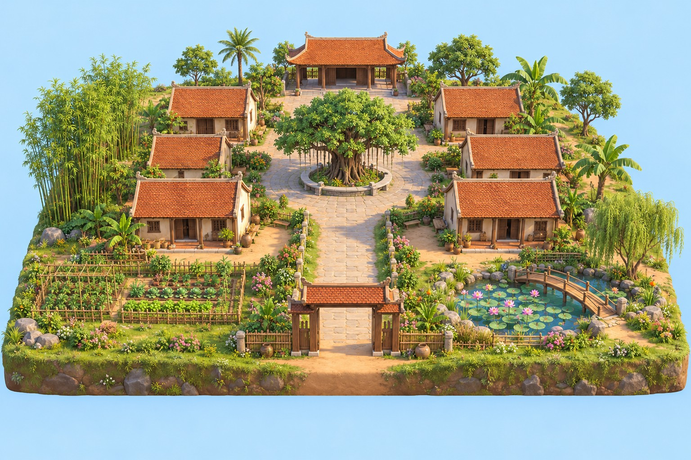
Chính diện · mốc bố trí
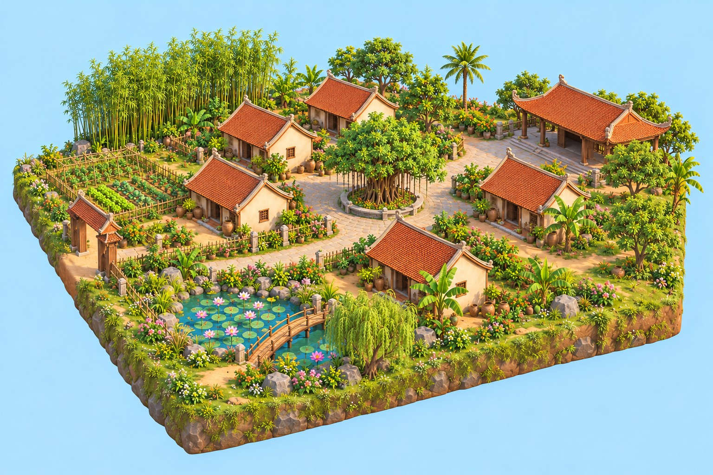
Phối cảnh
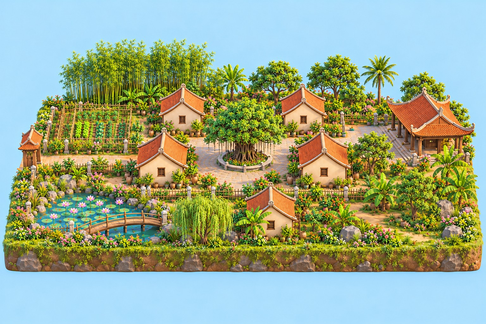
Góc trái
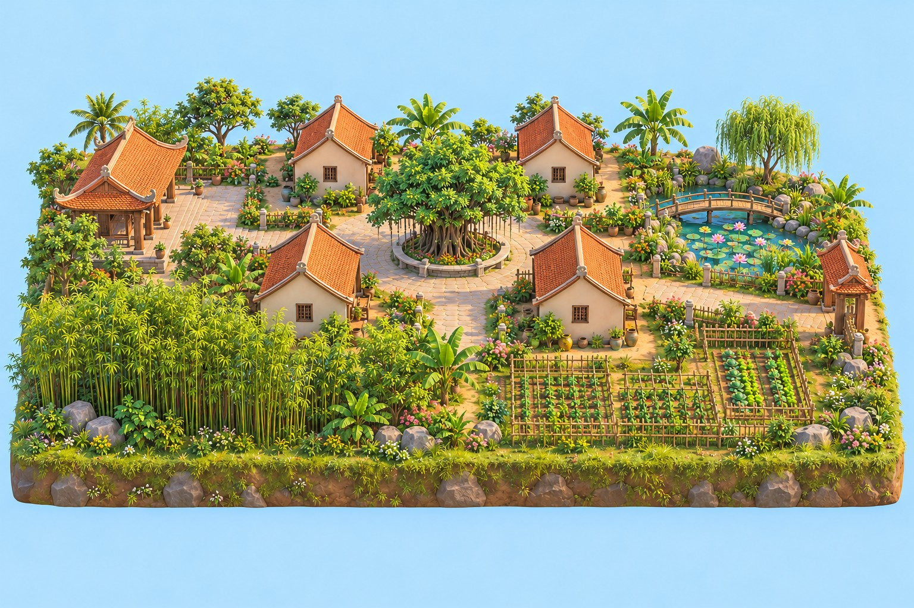
Góc phải
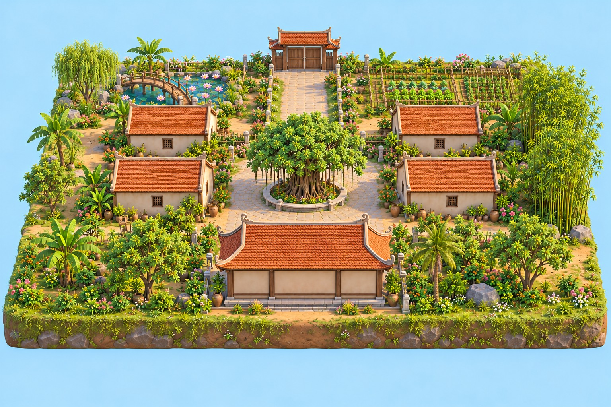
Phía sau
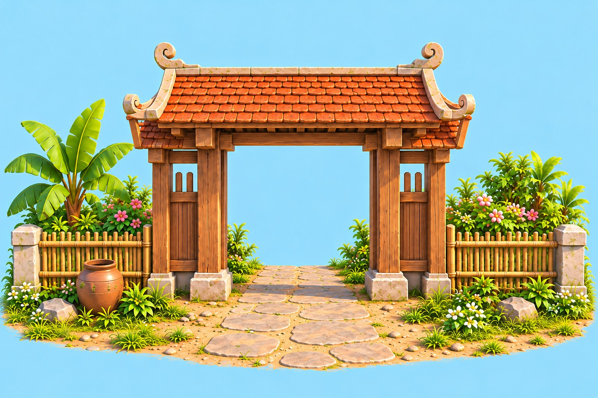
Cổng · Mặt trước
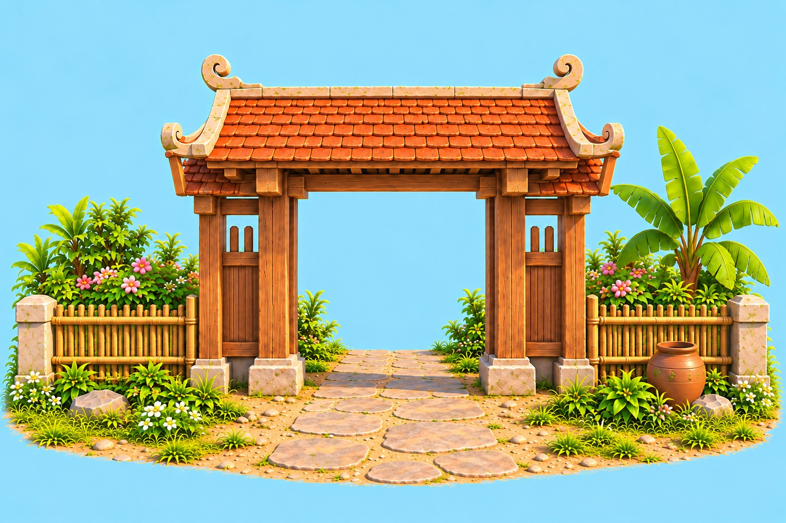
Cổng · Mặt sauCổng · Bên tráiCổng · Bên phải
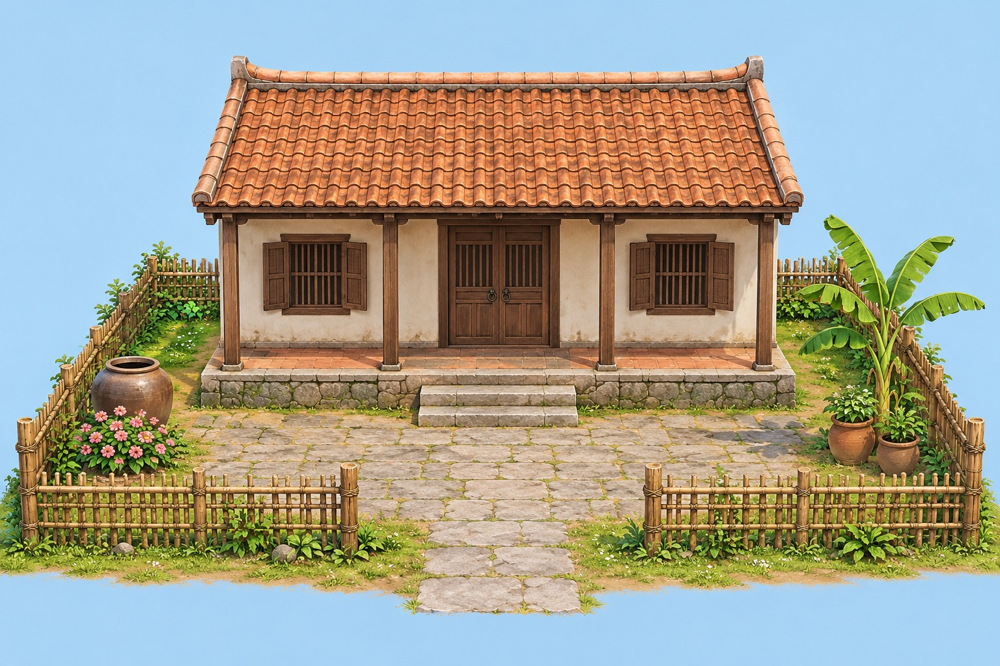
Nhà dân · Mặt trước
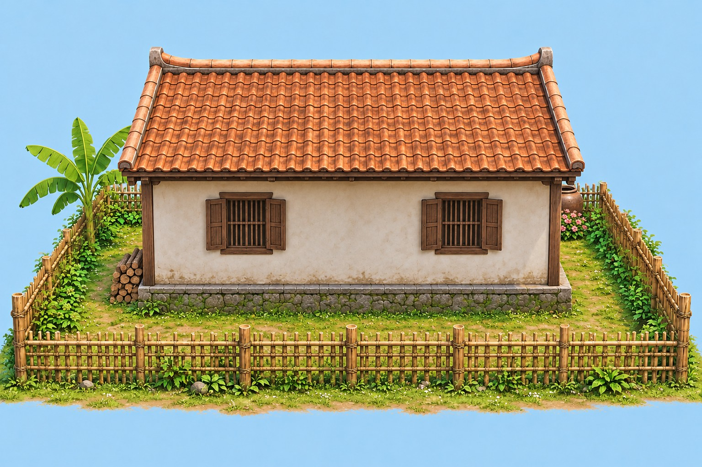
Nhà dân · Mặt sau
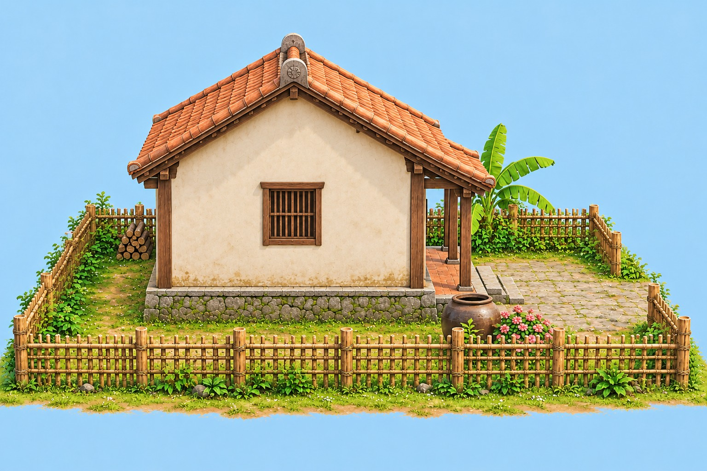
Nhà dân · Bên trái
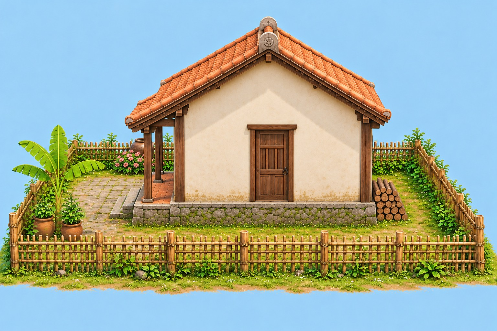
Nhà dân · Bên phải
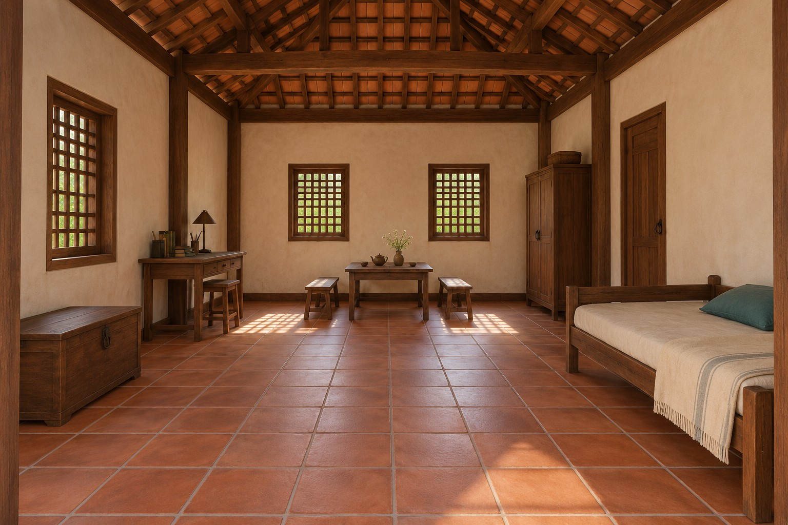
Nội thất · Từ cửa vào
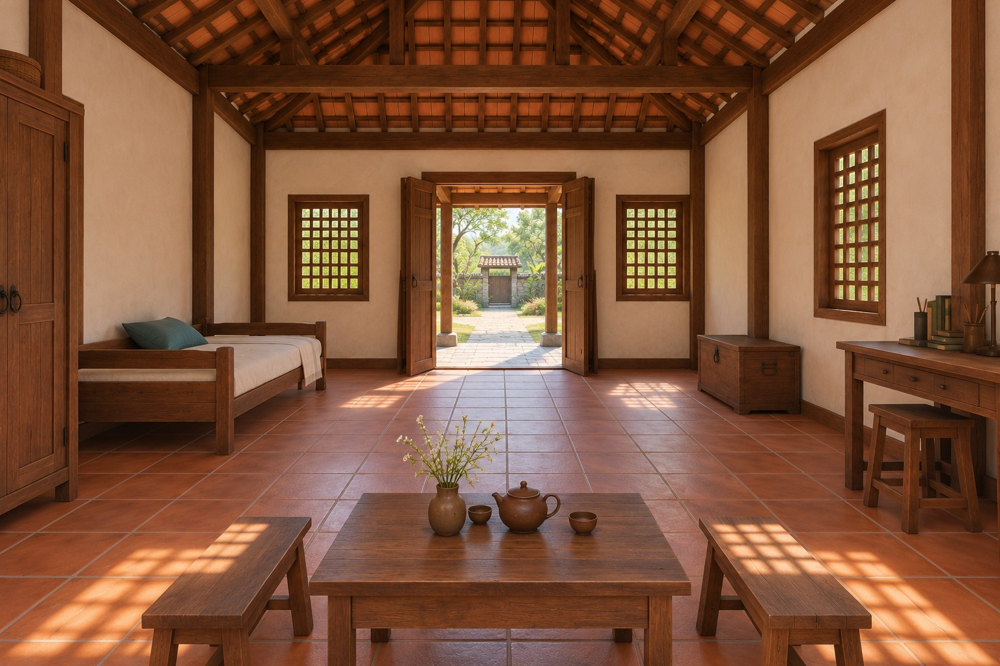
Nội thất · Nhìn ra sân
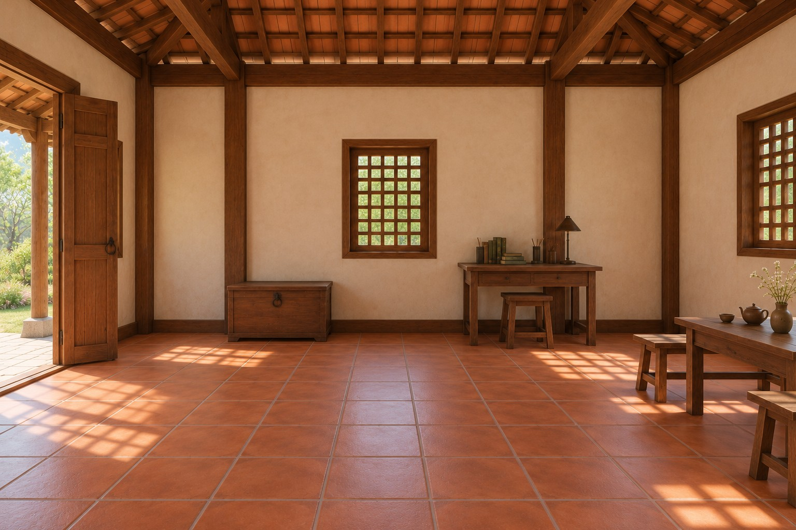
Nội thất · Bàn học · Rương
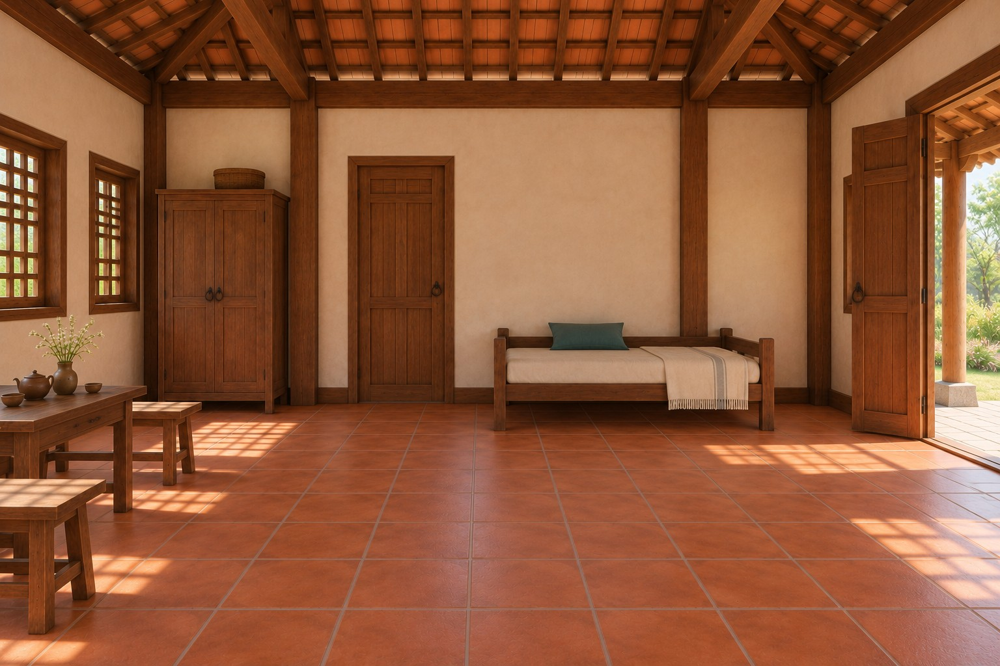
Nội thất · Giường · Tủ
Thời gian & thời tiếtThời tiết mô phỏng theo mùa, không phải dự báo trực tiếp. Lịch mô phỏng: mùa mưa tháng 5–11; mùa khô tháng 12–4. Hướng nắng và ánh trăng được mô phỏng gần đúng.
Nhà dân · Nội thấtKéo để nhìn quanh · Giữ nút để di chuyển
Đang dựng ngôi làng 3D…
Hồ sơ & Phòng chơi
Đang chờ đăng nhập.
Dùng biệt danh; không điền email hoặc thông tin riêng tư.